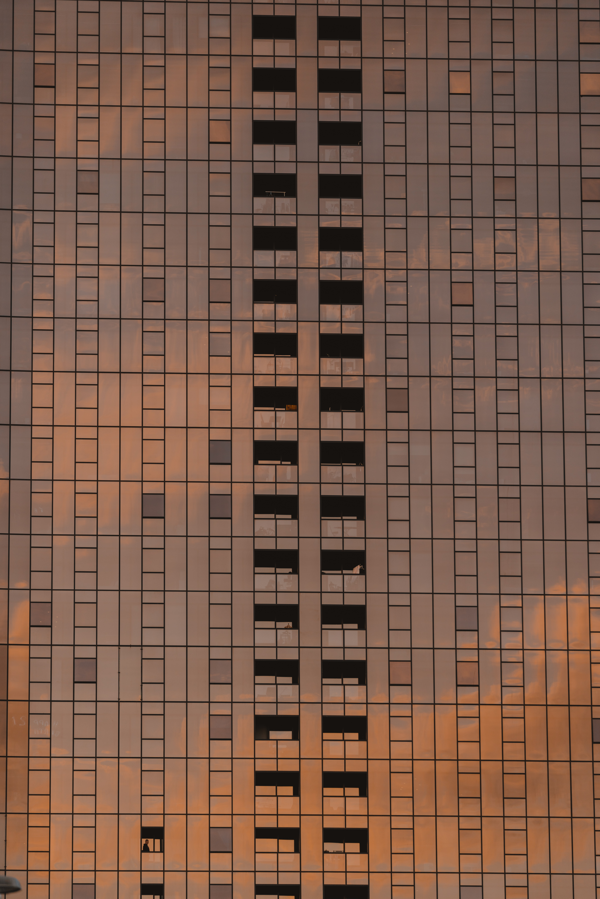

근린 [近隣] : 가까운 이웃, the neighborhood 근린공원 [近隣公園] : 근린거주자의 휴양 및 정서생활의 향상에 기여함을 목적으로 설치된 공원. Glean [gli:n] : (정보・지식 등을 어렵게 여기저기서) 얻다[모으다] GLEAN ( /ɡlēn/ : extract (information) from various sources) is pronounced the same way as Korean word “Guenlin”, which means the neighborhood: vicinity. Geunlin gong-won (park in Korean) is a large public green area in a neighborhood, and pretty damn sure it is EVERYWHERE The sources of our inspiration are all around us, from a dis- tressed M65 fishtail parka found in the flea market to an old pin-striped shirt uncle used to wear in the 80s. We tweak and transform our inspiration in our way by making use of complex structures with unique details and innovative textile materials.
